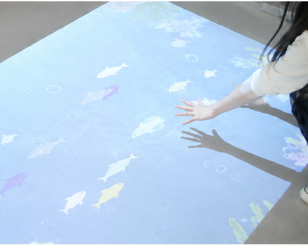
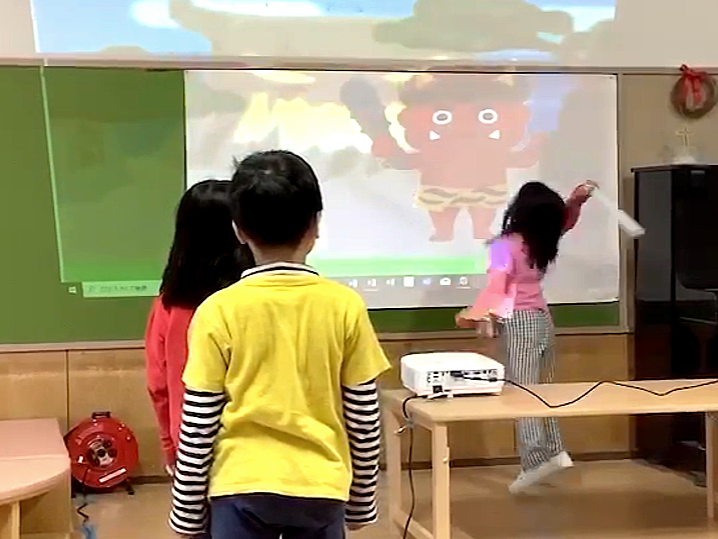
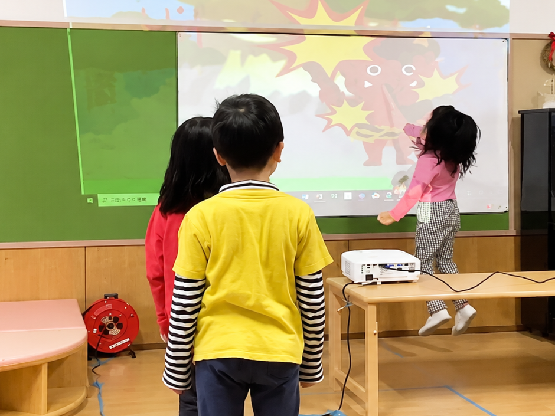
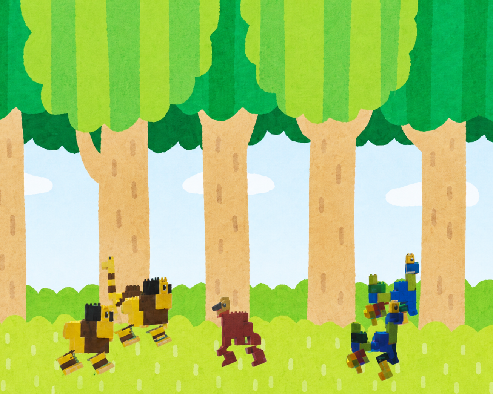
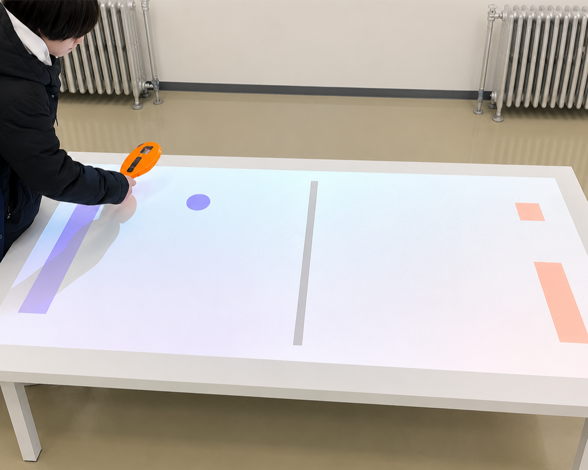

プロジェクタ応用システム
Projector

研究事例
遊べる絵本


絵本は通常、読むだけですが、物語に沿ってアクションを起こせたら、より楽しく読むことができるのではないか？そのような考えにもとづき、絵本のよさを残しつつも「遊べる」絵本を試作しました。例えば、「桃太郎」では鬼と戦ったり、「カチカチ山」では、「火打石を叩くと火がつく」「泥船を置くとタヌキが乗る」「泥船をバラバラにするとタヌキが溺れる」などのアクションが楽しめるようになっています。
粘土細工とあそぶ、レゴ作品とあそぶ

粘土やブロックで遊んだ経験のある人は多いと思いますが、作った作品は基本的に動きません。そこで本システムでは、作品をカメラでキャプチャして取り込み、バーチャルなオブジェクトとして動かす仕組みを導入しました。さらに、カメラやマイクを組み合わせることで、人の動きや音声に反応するインタラクションも可能にしています。 これにより、粘土やレゴで「つくる楽しさ」と「動かす楽しさ」の両方を味わえる、二段構えの遊び体験を提供するシステムを試作しました。
バーチャルエアホッケー

プロジェクタを使って、バーチャルなエアホッケーシステムを試作しました。実体がないぶんリアルな感覚は薄れますが、その代わりに高い拡張性と非自然性を持たせることができます。たとえば、テレビゲームのように機能を自由に追加したり、重力定数を変えたり、プレイヤーのレベルに応じて物理法則を無視したハンディキャップを設定することも可能です。